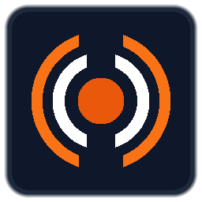

Connect This Windows PC to MaidanLive
Pair once using a 1-time Pairing Code from your MaidanLive Broadcast Control Room, or sign in directly with your MaidanLive Broadcaster account.

Pair once using a 1-time Pairing Code from your MaidanLive Broadcast Control Room, or sign in directly with your MaidanLive Broadcaster account.
—
Connecting to local OBS WebSocket v5...
4455).Program: None · Preview: —
TriggerStudioModeTransition on active scenes
cleanly without interrupting your live YouTube stream.
Pre-live OBS input telemetry — keep vocal peaks between -20 dB and -6 dB before going live.
VDO.Ninja cameras work without MediaMTX. Enable MediaMTX on this PC to receive Larix RTMP/SRT streams and pull them cleanly into OBS.